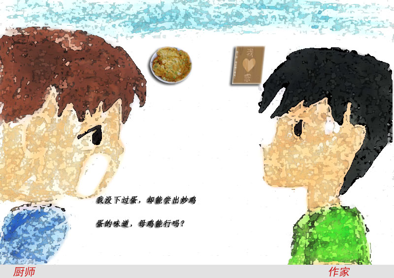

爱五子棋网首届五子棋评演义大赛
#1 爱五子棋网首届五子棋评演义大赛作者：有志青年 发表时间：2010-9-11 7:03:03
为进一步推动五子棋运动的普及，增强五子棋交流，特组织2010年爱五子棋网首届五子棋评演义大赛。期待各位五子棋爱好者用细致入微的分析，扣人心弦的描述，为大家剖析平静的棋盘下刀光剑影的精彩对决。具体事项如下：
一、参赛对象：
所有五子棋爱好者
二、参赛时间：
自本参赛通知发布日起至11月30日止
三、参赛内容：
就大赛组委会提供的指定棋局【共计十局】中任意对局，结合自身的学习和领悟，写棋评。体裁不限、字数不限！
四、评选方法：
11月30日后，将对所有参赛棋评，组织专家打分和网友投票相结合的方式评选出一二三等奖及优秀参与奖。
一等奖，威望加10，论坛金币5000
二等奖，威望加8， 论坛金币3000
三等奖，威望加5， 论坛金币2000
参与奖，威望加3， 论坛金币1000
此次活动特别感谢屏蔽、无尽给予的大力支持！
爱五子棋网管理团队
2010-9-11
1、 2010第七届浙江五子棋公开赛B组 【瑞星】
执黑 韦振强【假先】 执白 祁观 对局结果 黑胜
=======上图对应的爱五子棋谱代码如下，以便你拆解：========
h8h7h10g6g10g7i7i8f5g9g8h6f8i10e10j6i6j7j5k6h9j9k10h11k8e8f7f9g12f11g11f10f12e13j10k9l5h4h3e6i5
======================================================
2、 2010第七届浙江五子棋公开赛A组第九轮 【银月】
执黑 陈靖【交换】 执白 梅凡【假先】 对局结果 黑胜
=======上图对应的爱五子棋谱代码如下，以便你拆解：========
h8g7h9h7g6f7i7g9f8i8d8e8e7f6g11h11g10f10j9k9j6k5i6k6j7j5k8h5i5l7m8l8j10j8l9m10j11k10k12l13j12j13i12h12i13
======================================================
3、 2009年第一届全国智运会五子棋谱 【山月】
执黑 周可鼎【交换】 执白 曹冬【假先】 对局结果 白胜
=======上图对应的爱五子棋谱代码如下，以便你拆解：========
h8h9g6i9j9f9g9i7i6i8j7h5i10h11g10h10g11g12k6j6l7k8j5m8k4l3l8l6k7k5m7n7h3i4e6f6f5g4e4d3e5e7d8f10g8h7f7d5f11e8j11j10h12e3d4b5c4b4b3i3j4n5l4m4k2k12k11l11m10d11d12c12e10b8b7c8c10e13g13e14d13c14f14e15e11h14f13f15g15k13l12j13i13j14i14i12l14n13m13m3m5
======================================================
4、 2010年全国公开赛第二轮 【残月】
执黑 谭鑫麟【交换】 执白 陈靖【假先】 对局结果 白胜
=======上图对应的爱五子棋谱代码如下，以便你拆解：========
h8h9j9g8f7g7g6g10j6j7i8h7g9i7k7l8h5i4i5g5h6i6f9f8d6d10e5e9c11h4j4e10f10e11e12d9e7e6f11c8d7f12c9b7a6k10i10l9m8l7l10i3
======================================================
5、 2010年第七届浙江五子棋公开赛A组第五轮 【银月】
执黑 梅凡【交换】 执白 卓淼军【假先】 对局结果 黑胜
=======上图对应的爱五子棋谱代码如下，以便你拆解：========
h8i9h7h9i10j9g9i7j8g8k6i6i5h5g4h4e6e7f6d6j4h3h6k3f10d7d9c7f8g7f7f9e10g10e8c10f11
======================================================
6、 2010年第七届浙江五子棋公开赛A组第一轮 【松月】
执黑 卓淼军【交换】 执白 贺启发【假先】 对局结果 黑胜
[iwzq]h8h9h7h6g6i8j7g7f8i7i9j8k9i5h5f7k8i6i4k7j4h4j3k2j6j5g5j10i10h1
#2 Re:爱五子棋网首届五子棋评演义大赛作者：怪 发表时间：2010-9-11 10:37:56
 10局全部评了是不是分开给威望？现在太无聊了，找点事做。
10局全部评了是不是分开给威望？现在太无聊了，找点事做。#3 Re:爱五子棋网首届五子棋评演义大赛作者：怪 发表时间：2010-9-11 10:51:57
 不过选的对局最好能找不一样的人下的不一样的开局，最好风格也有点差距的好吧。
不过选的对局最好能找不一样的人下的不一样的开局，最好风格也有点差距的好吧。#4 Re:爱五子棋网首届五子棋评演义大赛作者：我就不信注册不上 发表时间：2010-9-11 14:07:55
=======上图对应的爱五子棋谱代码如下，以便你拆解：========
h8h9h6i10i6i9g9g8j11i7i11h10h11g11j8j7g10f9j10f10f8h12e9g7h7i8i13k11g6k6l5f6j3f7e6k4f5k5k7k3k2e5i12h13m7l8d4g4d6d7c5e7c7f12e13d11f11e12c12c10b9d12g12d10d9c9
======================================================
支持一下，我也来奉上一局，出处不便公开
#5 Re:爱五子棋网首届五子棋评演义大赛作者：屏蔽 发表时间：2010-9-12 0:11:24
quote：不过选的对局最好能找不一样的人下的不一样的开局，最好风格也有点差距的好吧。［此帖子已被 屏蔽 在 2010-9-12 0:12:14 编辑过］
#6 Re:Re:爱五子棋网首届五子棋评演义大赛作者：怪 发表时间：2010-9-12 1:14:28
引用：李道长太强了。。。
原文由 屏蔽 发表于 2010-9-12 0:11:24 :
quote：不过选的对局最好能找不一样的人下的不一样的开局，最好风格也有点差距的好吧。其实是这样的……很难有“选择”对局的机会，说实在的，每盘棋都有奇妙之处，但我觉得要真正找出“值得评价”的棋，其实是非常，非常困难的事情。［此帖子已被 屏蔽 在 2010-9-12 0:12:14 编辑过］
#7 Re:爱五子棋网首届五子棋评演义大赛作者：岳麓小棋后 发表时间：2010-9-12 23:02:40
出新活动啦，支持下
#8 Re:爱五子棋网首届五子棋评演义大赛作者：踵酃 发表时间：2010-9-13 11:30:43
参与奖，我可不可以解释成，参加的都可得此奖？［ 有志青年 于 2010-9-13 17:50:41 时花20金币送鲜花一朵］
#9 Re:爱五子棋网首届五子棋评演义大赛作者：啊呆 发表时间：2010-9-13 16:16:31
应该是#10 Re:爱五子棋网首届五子棋评演义大赛作者：流逝 发表时间：2010-9-14 1:57:35
其实棋评只有对局者自己来写才是最好的#11 Re:爱五子棋网首届五子棋评演义大赛作者：木其山人 发表时间：2010-9-15 14:55:03
流逝大师说的有道理
#12 Re:Re:爱五子棋网首届五子棋评演义大赛作者：岳麓小棋后 发表时间：2010-9-15 21:40:14

纯属娱乐！！
［ 掌棋宣传员 于 2010-9-21 23:12:29 时花20金币送鲜花一朵］
［ 掌棋宣传员 于 2010-9-21 23:12:31 时花20金币送鲜花一朵］
#13 Re:爱五子棋网首届五子棋评演义大赛作者：日出333 发表时间：2010-9-22 21:33:38
一个面向精英的活动~~~菜鸟期待作品中#14 Re: No.8作者：人更 发表时间：2010-9-24 8:19:24
我到觉得可以。
这活动目的当然不是激励出几篇有水平的棋评，而应该在于鼓励大家在分析学习名局中思想和技巧的同时，提高对五子棋的兴趣以及和广大爱好者进行交流~
就像活动前面两句话所说：“为进一步推动五子棋运动的普及，增强五子棋交流”
不过活动要求说只选出“优秀”参与奖，建议对所有参与的童鞋也有所奖励~
［此帖子已被 人更 在 2010-9-24 8:22:53 编辑过］
［ 有志青年 于 2010-9-24 10:22:12 时奖励此帖[金币加 100 威望加1］
［ 掌棋宣传员 于 2010-9-24 23:06:30 时花20金币送鲜花一朵］
［ 掌棋宣传员 于 2010-9-24 23:06:33 时花20金币送鲜花一朵］
#15 Re:爱五子棋网首届五子棋评演义大赛作者：菜包先生 发表时间：2010-9-30 10:02:37
推荐：其实我很菜ShowPost.asp?ThreadID=11406
#16 Re:爱五子棋网首届五子棋评演义大赛作者：茗弈七夜 发表时间：2010-10-13 12:51:14
新活动，大力支持。我也赞同自己写自己的棋评是最好的。不过，有学习的机会，我一定会参与的。［ 踵酃 于 2010-11-9 22:23:39 时花20金币送鲜花一朵］
#17 Re:爱五子棋网首届五子棋评演义大赛作者：踵酃 发表时间：2010-11-9 22:40:16
支持采用组织提供的10张棋谱作为棋评内容。
虽然大部分人认为只有对局者才能明白自己行棋的真正想法！但大家有没有听说过“旁观者清？”
这个活动的目的是在于学习，同样的一个局面，不同的分析，不同的想法，才能做出客观的比较。
学习在棋盘上解读对局者。以棋的角度，分析对局者性格，思想，天马行空，只有你想不到的，没有你写不出的。
竞赛标题：
期待各位五子棋爱好者用细致入微的分析，扣人心弦的描述，为大家剖析平静的棋盘下刀光剑影的精彩对决。
一杯白开水，也能写出变化万千的描述。此次比赛比的不止是对棋的了解，真正意义上比的是想象力。
按我估计，评分有两大标准：
1。分析能力，正确解读对局者当时的想法。
2。想象力跟描述，如何把你想象的棋局用精彩绝伦的方法描述出来。
后续：菜鸟别期待InG，也参与进来吧！高超的棋艺不代表棋评同样高超。 麻木纳闷的棋评，正确的分析，但缺乏激情，缺乏想象力， 我们会接受吗？！！
［此帖子已被 踵酃 在 2010-11-9 22:42:00 编辑过］
［此帖子已被 踵酃 在 2010-11-9 22:48:11 编辑过］
［此帖子已被 踵酃 在 2010-11-9 22:50:25 编辑过］
#18 Re:爱五子棋网首届五子棋评演义大赛作者：小滚滚 发表时间：2010-11-16 20:09:25
要是能参加我肯定参加#19 Re:爱五子棋网首届五子棋评演义大赛作者：霸王龙 发表时间：2010-11-24 12:33:05
加油加油加油！！！！！！！！！！！！！！！！！！！！！！！！！！！！！！！！！！！#20 Re:爱五子棋网首届五子棋评演义大赛作者：小滚滚 发表时间：2010-12-1 12:08:19
对局最好能找不一样的人下的不一样的开局#21 Re:爱五子棋网首届五子棋评演义大赛作者：霸王龙 发表时间：2010-12-4 16:16:28
要是能参加我肯定参加#22 Re:爱五子棋网首届五子棋评演义大赛作者：霸王龙 发表时间：2010-12-4 16:17:06
?/?????????????